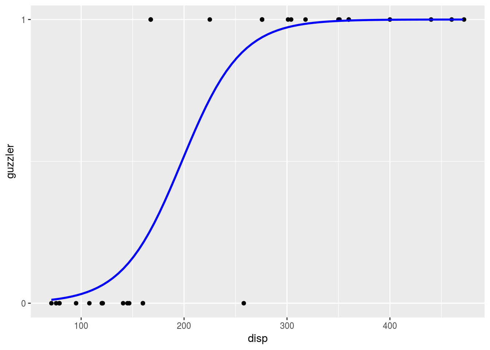
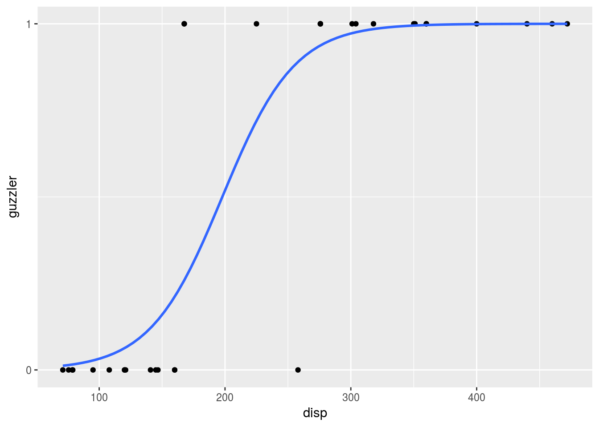

Let’s take the classic mtcars dataset:
library(tidyverse)
mtcars <- as_tibble(mtcars)
head(mtcars)## # A tibble: 6 x 11
## mpg cyl disp hp drat wt qsec vs am gear carb
## <dbl> <dbl> <dbl> <dbl> <dbl> <dbl> <dbl> <dbl> <dbl> <dbl> <dbl>
## 1 21.0 6. 160. 110. 3.90 2.62 16.5 0. 1. 4. 4.
## 2 21.0 6. 160. 110. 3.90 2.88 17.0 0. 1. 4. 4.
## 3 22.8 4. 108. 93. 3.85 2.32 18.6 1. 1. 4. 1.
## 4 21.4 6. 258. 110. 3.08 3.22 19.4 1. 0. 3. 1.
## 5 18.7 8. 360. 175. 3.15 3.44 17.0 0. 0. 3. 2.
## 6 18.1 6. 225. 105. 2.76 3.46 20.2 1. 0. 3. 1.and define a binary variable, guzzler, that identifies those vehicles below or above the median value of miles per gallon fuel efficiency:
mtcars$guzzler <- ifelse(mtcars$mpg > median(mtcars$mpg, na.rm = TRUE), 0, 1)
head(mtcars)## # A tibble: 6 x 12
## mpg cyl disp hp drat wt qsec vs am gear carb
## <dbl> <dbl> <dbl> <dbl> <dbl> <dbl> <dbl> <dbl> <dbl> <dbl> <dbl>
## 1 21.0 6. 160. 110. 3.90 2.62 16.5 0. 1. 4. 4.
## 2 21.0 6. 160. 110. 3.90 2.88 17.0 0. 1. 4. 4.
## 3 22.8 4. 108. 93. 3.85 2.32 18.6 1. 1. 4. 1.
## 4 21.4 6. 258. 110. 3.08 3.22 19.4 1. 0. 3. 1.
## 5 18.7 8. 360. 175. 3.15 3.44 17.0 0. 0. 3. 2.
## 6 18.1 6. 225. 105. 2.76 3.46 20.2 1. 0. 3. 1.
## # ... with 1 more variable: guzzler <dbl>We’ll use this as our dependent variable which we’ll try to predict with displacement, disp.
What we want to achieve given our binary outcome data is a measure of the probability of y = 1, that a vehicle is a “guzzler” in our case, given x. The logit function defines the probability of y given X as:
\(Pr(y | X) = \frac{\exp(\beta_0 + \beta_1X)}{1 + \exp(\beta_0 + \beta_1X)}\)
Let’s simplify this, and for the purpose of presentation, I’ll use \(P(x)\) to represent \(Pr(y | X)\) and \(e\) to represent \(exp(\beta_0 + \beta_1X)\):
\(P(x) * (1 + e) = e\)
\(P(x) + P(x)*e = e\)
\(P(x) = e - P(x)*e\)
\(P(x) = e(1 - P(x))\)
\(\frac{P(x)}{1 - P(x)} = e\)
Replace our substitutes \(P(x)\) and \(e\) with our original terms and we get:
\(\frac{Pr(y|X)}{1 - Pr(y|X)} = exp(\beta_0 + \beta_1X)\)
This equation is known as the odds ratio. For example, an odds ratio of 4/1 means that there are 4 observations that score 1 on y for every 1 observation that scores a 0 on y. Taking the log of both sides gives us:
\(\frac{log(Pr(y|X))}{log(1 - Pr(y|X))} = \beta_0 + \beta_1X\)
So while we have non-linear data, the probabilities are assumed linear in the logit.
In logistic regression the \(\beta\) parameters are not found using a given formula as they are in least-squares regression (the process is not deterministic). Instead, we have to provide the function with a starting value for each of the parameters that we want to estimate. With this initial starting point we can then calculate the likelihood of the data given the parameters that we have supplied. Once we have an estimate for this likelihood, we then try a different set of parameters and calculate the likelihood of the data given this new set. We continue on with this process until we find the set of parameters for which our estimated likelihood is highest - the maximum likelihood.
#set some initial parameter values
b0 <- 0.01
b1 <- 0.01
pars <- c(b0, b1)
#define x and y
x <- cbind(1, mtcars$disp) #we need to include a column of 1s in our X matrix to represent the intercept
y <- mtcars$guzzler
##the logit function from above, working backwards
logit <- x %*% pars # %*% is the matrix multiplication operator
exp_l <- exp(logit) # gives us exp(b0 + b1*x)
probabilities <- exp(logit) / (1 + exp(logit)) #this is the logit function shown above
##obtaining and summing the log likelihoods
likelihoods <- y * log(probabilities) + (1 - y) * log(1 - probabilities) #the likelihoods
sum_likelihoods <- sum(likelihoods) #sum of the likelihoodsThe sum of the likelihoods given our starting parameter values \(\beta_0\) = 0.01 and \(\beta_1\) = 0.01 is -23.8443595. Is this good? Bad? We don’t know. The only way we can really understand this is through comparison with other possible values for the \(\beta\)s.
Let’s see what happens when we try different values for our \(\beta\)s:
b0 <- 0.02
b1 <- 0.02
pars <- c(b0,b1)
logit <- x %*% pars # %*% is the matrix multiplication operator
exp_l <- exp(logit) # gives us exp(b0 + b1*x)
probabilities <- exp(logit) / (1 + exp(logit)) #this is the logit function shown above
likelihoods <- y * log(probabilities) + (1 - y) * log(1 - probabilities) #the likelihoods
sum_likelihoods <- sum(likelihoods) #sum of the likelihoodsWith \(\beta_0\) and \(\beta_1\) set to 0.02, the sum of the likelihoods is -39.507938. Since the goal of logistic regression is to maximize the likelihood, these two parameter values represent a worse fit to the data. Let’s try two other parameter values:
b0 <- -1.2
b1 <- 1
pars <- c(b0,b1)
logit <- x %*% pars # %*% is the matrix multiplication operator
probabilities <- exp(logit) / (1 + exp(logit)) #this is the logit function shown above
likelihoods <- y * log(probabilities) + (1 - y) * log(1 - probabilities) #the likelihoods
sum_likelihoods <- sum(likelihoods) #sum of the likelihoodsNow we have NaN, the best yet. As you can see, going over all possible beta values to find the maximum likelihood manually would be a very long process. But, we don’t need to; we can use optimization functions.
logistic_reg <- function(x, y, par) {
x <- cbind(1, x) #input a column of 1s for the intercept
probs <- exp(x %*% par) / (1 + exp(x %*% par))
ll <- sum(y * log(probs) + (1 - y) * log(1 - probs))
return(-ll) #the optim function minimizes, we want to maximize. So we set our output to -ll.
}And now we optimize the parameters for our logistic regression function based on the x and y variables we are interested in to find the set of \(\beta_0\) and \(\beta_1\) that maximize the likelihood.
optim(par = c(-0.01, 0.01), fn = logistic_reg, x = mtcars$disp, y = mtcars$guzzler)## $par
## [1] -6.87531841 0.03475048
##
## $value
## [1] 6.751449
##
## $counts
## function gradient
## 161 NA
##
## $convergence
## [1] 0
##
## $message
## NULLIf we compare to the parameter estimates from the optimization to the coefficients produced by the glm() function:
glm_mod <- glm(guzzler ~ disp, data = mtcars, family = binomial)
coef(glm_mod)## (Intercept) disp
## -6.87410400 0.03474336
I’m going to show two coding approaches to the visualization for this model, both using ggplot. The first method involves creating a data grid which includes x values and corresponding predicted y values based on the given model. Here I use the data_grid function from the modelr package, but you could just as easily accomplish the same in base R by building a data frame. Then we create a simple scatter plot of the original data, and overlap a fitted line using the grid data. Creating a data grid with predicted values is not necessary in this case, as I show with the second method, but the advantage of this approach is that it works with any type of model.
library(modelr)
grid <- mtcars %>%
data_grid(disp = seq(min(mtcars$disp), max(mtcars$disp), 5)) %>%
mutate(preds = predict(glm_mod, type = "response", newdata = .))
mtcars %>%
ggplot(aes(x = disp, y = guzzler)) +
geom_point() +
geom_line(data = grid, aes(y = preds), col = "blue", size = 1) +
scale_y_continuous(breaks = c(0,1))
In the case of logistic regression, a simpler approach is to simply add the fitted line to a scatterplot with geom_smooth.
ggplot(mtcars, aes(x = disp, y = guzzler)) +
geom_point() +
geom_smooth(method = "glm", method.args = list(c(family = "binomial")), se = F) +
scale_y_continuous(breaks = c(0,1))